Quỷ sứ
Nhân vật âm tyQuỷ tốt trông ngục, thi hành lệnh của âm ty.
19 nhân vật · 18 cảnh hình phạt · model vector 2D có chuyển động. Đây là thiết kế game theo dị bản đã ghi nguồn, không phải bản phục dựng lịch sử. SVG có nền trong suốt; mở từng file để tải và chỉnh sửa.

Quỷ tốt trông ngục, thi hành lệnh của âm ty.
Đầu trâu thân người; đi cùng Mã Diện áp giải vong hồn.
Đầu ngựa thân người, cộng sự của Ngưu Đầu.
Quỷ sai dẫn hồn trong cặp Hắc–Bạch Vô Thường của dân gian.
Quỷ sai dẫn hồn, thường được tạo hình thành cặp với Hắc Vô Thường.
Quan lại âm phủ ghi chép và hỗ trợ xét xử.
Người trao bát canh quên ký ức trước tái sinh trong truyền thuyết dân gian.
Hình tượng cứu độ chúng sinh; không phải cai ngục hay người thi hành hình phạt.
Nhân vật linh hồn trong cảnh; cũng là mẫu cho người chơi.
Vị vua của điện thứ 1 trong hệ thống Thập điện; không tương ứng một-một với tầng địa ngục.
Vị vua của điện thứ 2 trong hệ thống Thập điện; không tương ứng một-một với tầng địa ngục.
Vị vua của điện thứ 3 trong hệ thống Thập điện; không tương ứng một-một với tầng địa ngục.
Vị vua của điện thứ 4 trong hệ thống Thập điện; không tương ứng một-một với tầng địa ngục.
Vị vua của điện thứ 5 trong hệ thống Thập điện; không tương ứng một-một với tầng địa ngục.
Vị vua của điện thứ 6 trong hệ thống Thập điện; không tương ứng một-một với tầng địa ngục.
Vị vua của điện thứ 7 trong hệ thống Thập điện; không tương ứng một-một với tầng địa ngục.
Vị vua của điện thứ 8 trong hệ thống Thập điện; không tương ứng một-một với tầng địa ngục.
Vị vua của điện thứ 9 trong hệ thống Thập điện; không tương ứng một-một với tầng địa ngục.
Vị vua thứ mười, gắn với việc chuyển sinh trong hệ thống Thập điện.
Quỷ tốt kéo lưỡi vong bằng kìm.
Kéo lớn cắt ngón tay trong dị bản.
Vong bị treo lên cây có lưỡi nhọn.
Gương hiện việc đã làm; đây là cảnh xét nghiệp.
Vong bị nhốt trong lồng hấp nóng.
Vong phải ôm cột đồng nóng đỏ.
Vong bị buộc vượt núi lưỡi sắc.
Vong chịu giá lạnh trên núi băng.
Vong bị thả vào vạc dầu nóng.
Đàn trâu húc, giẫm trong hố.
Tảng đá thả xuống đè vong.
Vong bị giã bằng chày trong cối.
Vong chịu khổ trong hồ máu.
Bản kể giam vong tại thành Uổng Tử.
Trách hình: thân vong bị phân tách.
Vong bị đưa lên núi lửa thiêu đốt.
Vong bị nghiền trong cối đá.
Vong bị giữ trên khung và cưa.